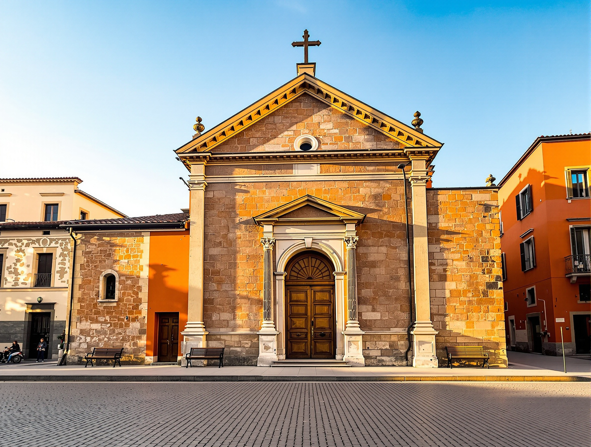
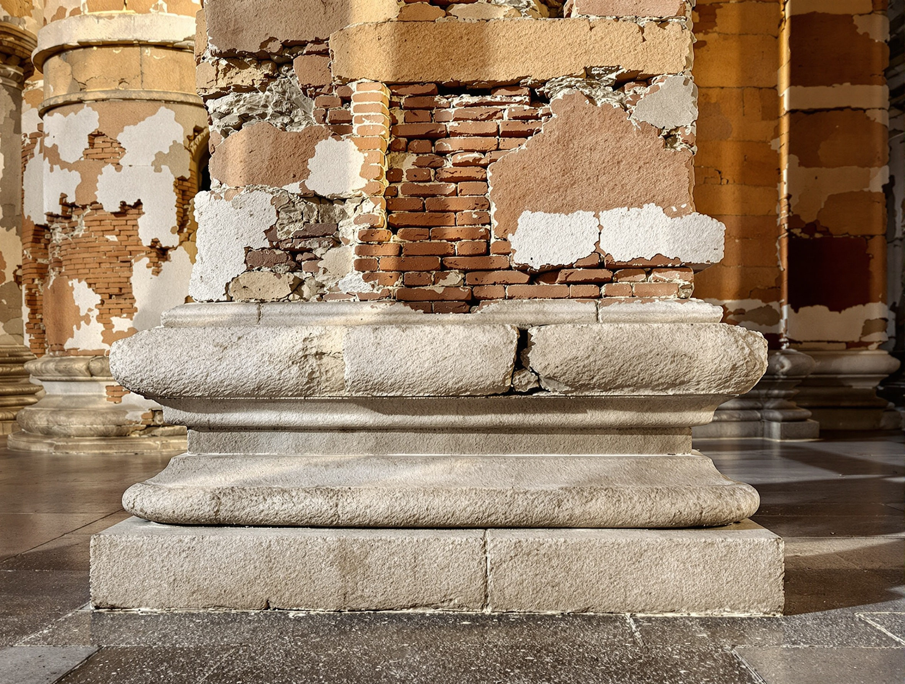
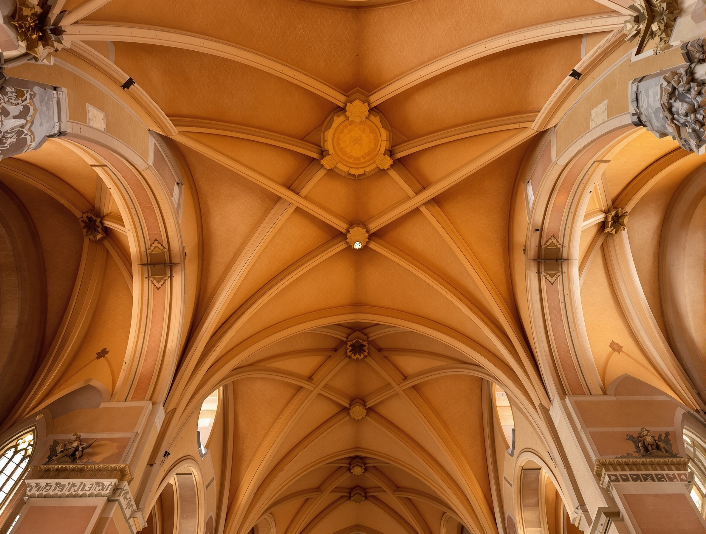
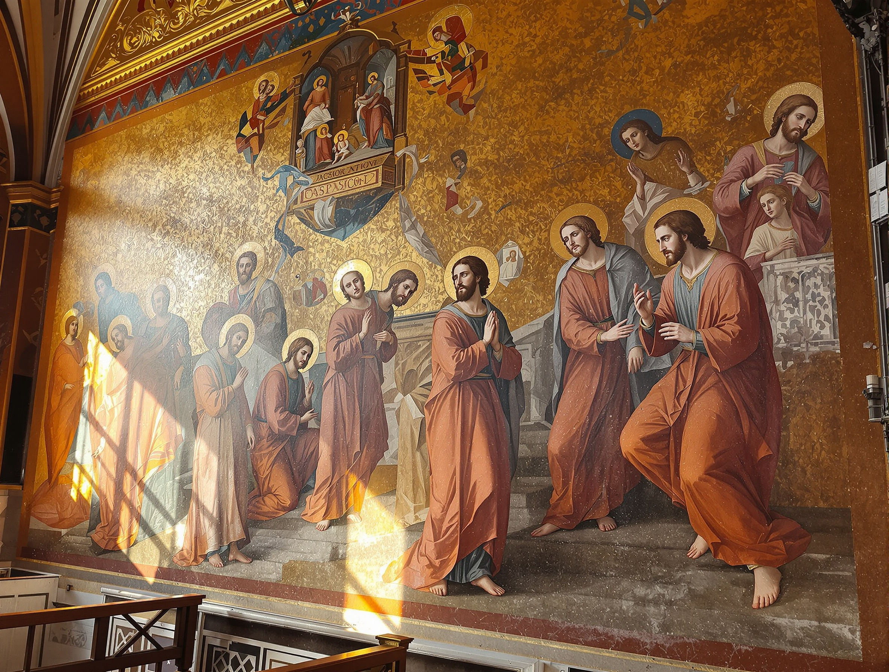
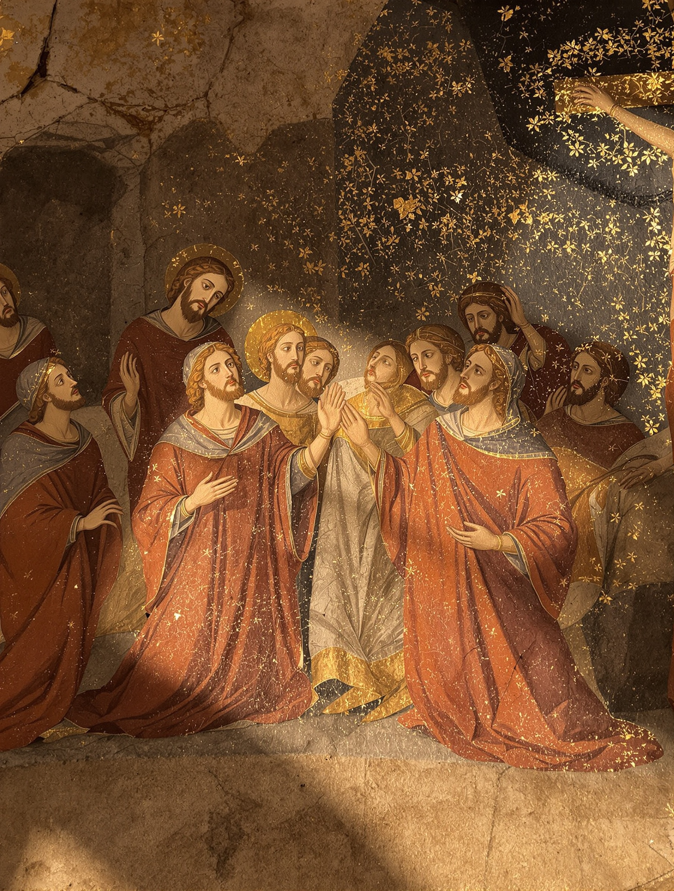
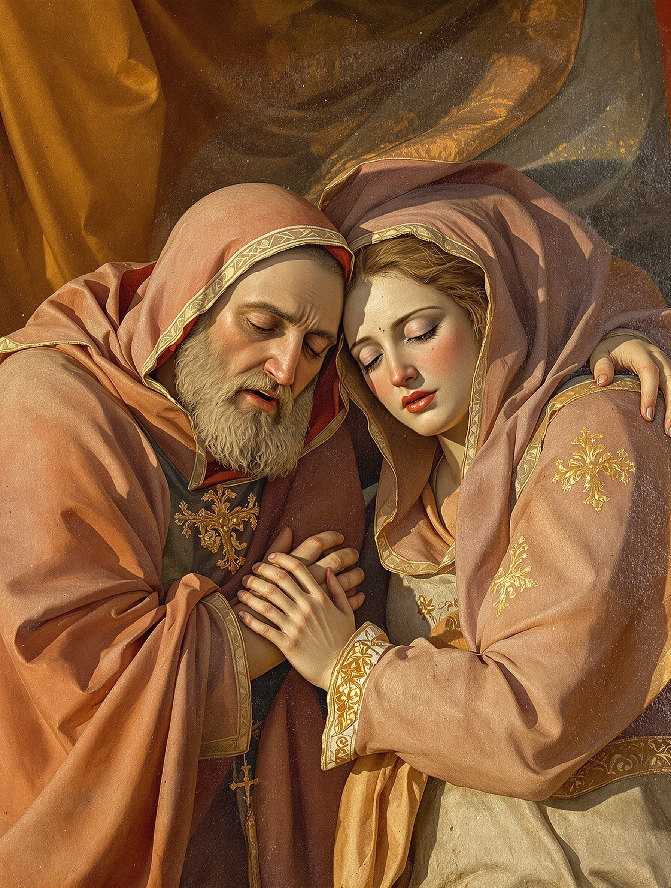
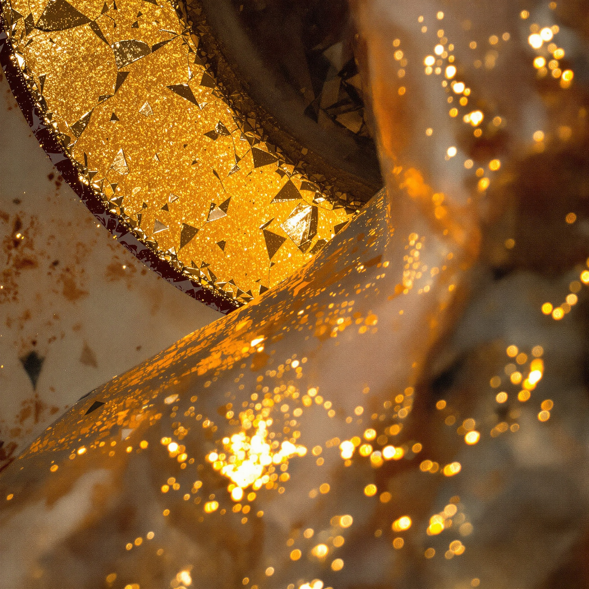
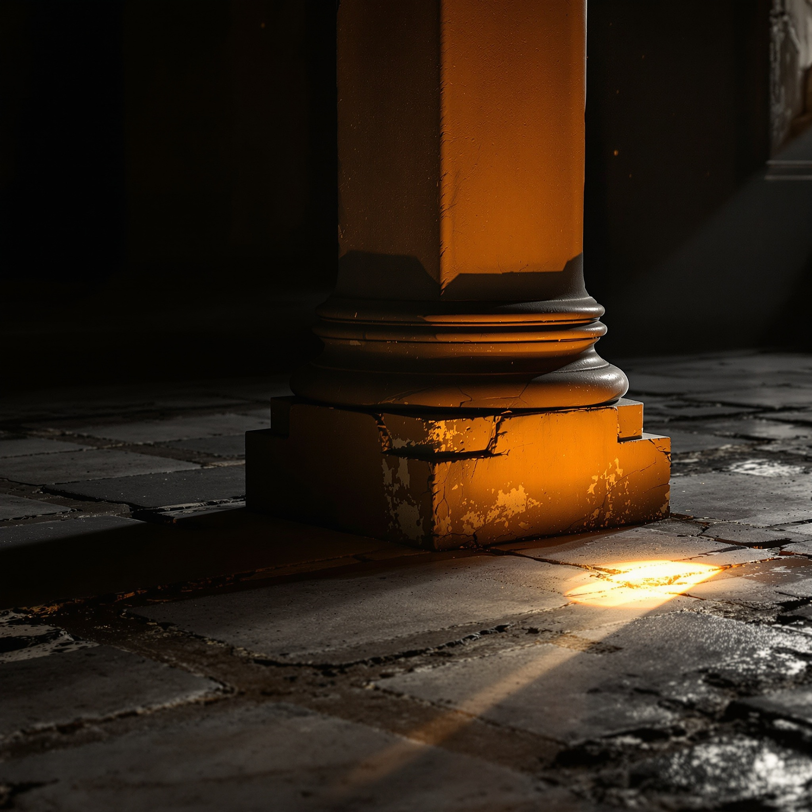
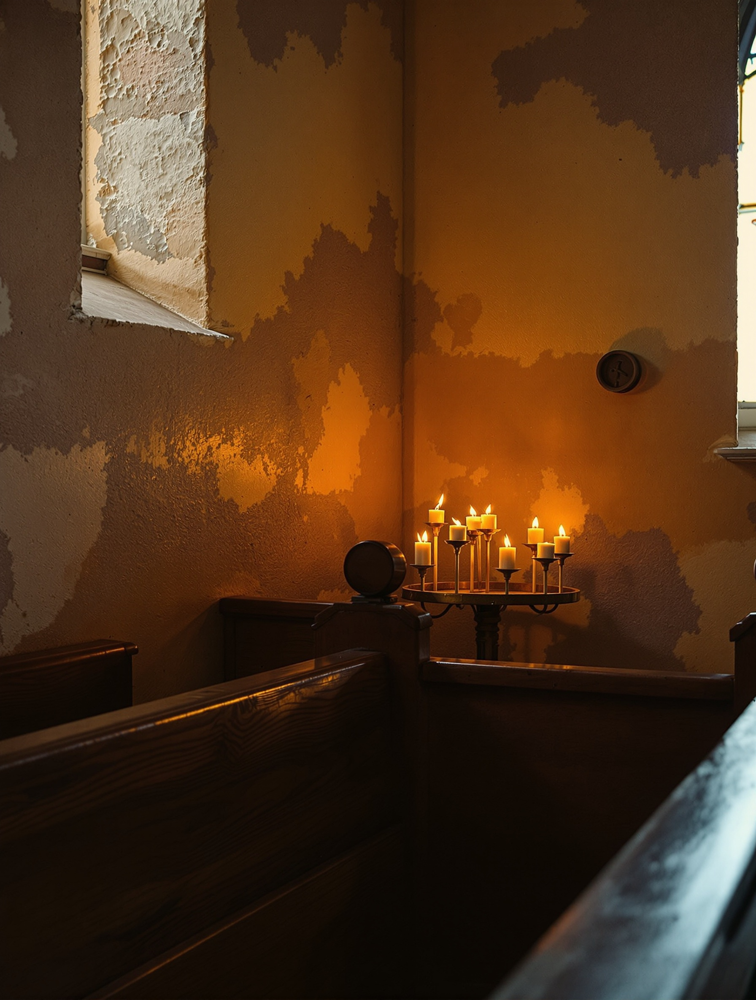

Milano · dal 750
San Giorgio al Palazzo
Una chiesa dell'VIII secolo nel cuore di Milano.
Dentro, gli affreschi della Passione di Luini e un silenzio raro.
La soglia
Un luogo di raccoglimento, non un museo.
San Giorgio al Palazzo è una chiesa cattolica, viva e officiata.
Sorge in pieno centro, a pochi passi dal Duomo, dove il rumore della città si ferma sulla soglia.
Chi entra trova affreschi, penombra e un silenzio che a Milano è raro.
Vi accogliamo come luogo di preghiera e di studio, aperto a chi vuole guardare con rispetto.



Le origini
Dal 750, strato su strato.
Poche chiese di Milano possono raccontare una storia così lunga. Questa la porta scritta nelle sue pietre.
- Fondata intorno al 750 d.C., sopra le vestigia di un edificio di età romana.
- Rialzata e rifatta lungo i secoli: fondazioni tardoantiche, murature medievali, interventi rinascimentali e barocchi.
- Un solo edificio che tiene insieme molte epoche, leggibili l'una accanto all'altra.
La cappella della Passione
Il ciclo di Luini.
Sulla destra della navata, nella cappella della Passione, Bernardino Luini affrescò alla fine del Quattrocento un intero ciclo dedicato alla Passione di Cristo.
Scene dipinte in ocra, rosso e oro, sopravvissute per secoli. Molti le scoprono per caso. Vale la pena arrivarci sapendo cosa si guarda.



Dettagli pittorici
Pigmento, craquelure, oro.
Da vicino, l'affresco racconta il suo tempo.
La foglia d'oro incrinata delle aureole.
Le crepe sottili che attraversano l'intonaco.
La luce che rade la parete e accende l'ocra, un centimetro alla volta.



Visitare
Orari, luogo, e come visitare in raccoglimento.
Prima di attraversare la città, un promemoria: la chiesa osserva la pausa di mezzogiorno. Conviene sempre una telefonata per confermare gli orari del giorno.
Orari
Al mattino, fino alle 12.
Nel pomeriggio, dalle 16.
Gli orari possono variare in occasione delle funzioni. Vi consigliamo di chiamare il 02 805 7148 prima di venire.
Dove siamo
Piazza San Giorgio, 220123 Milano
In pieno centro, a pochi passi dal Duomo e dalla fermata Cordusio (M1).
Apri in Google MapsCome visitare
- Custodite il silenzio: è un luogo di preghiera oltre che d'arte.
- Un abbigliamento rispettoso è gradito, come in ogni chiesa.
- Durante le funzioni la visita è sospesa: attendete la fine della celebrazione.
- Fotografie senza flash, per non affaticare gli affreschi.
Contatto
Prima di venire, chiamateci.
Per visite guidate, informazioni sugli orari o sulle funzioni, il modo più diretto è una telefonata.
Rispondiamo volentieri, e vi diciamo il momento migliore per trovare la chiesa aperta e in silenzio.